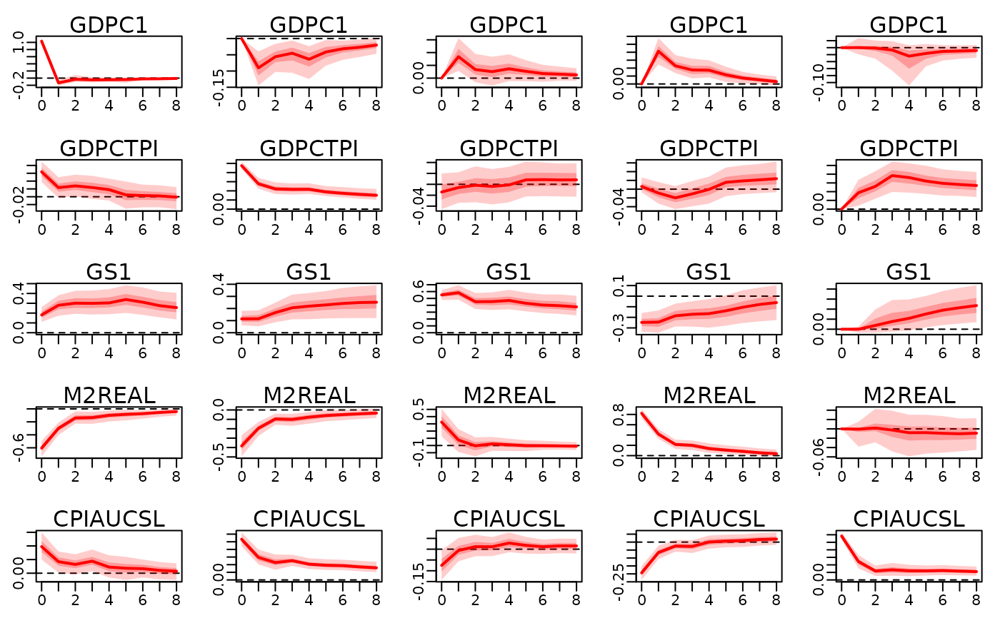

Effect of the structural (factor) shocks over time.
Arguments
- x
An object of type
bayesianVARs_bvar.- ahead
maximum number of time horizons.
- structural_restrictions
an object generated by
specify_structural_restrictions. If specified, the IRFs to the structural shocks identified by the restrictions given in this argument will be calculated. If not specified, the orthogonal IRFs based on the Cholesky decomposition will be calculated. Note that the orthogonal IRFs depend on the ordering of the variables and do not necessarily correspond to shocks with a meaningful interpretation.- shocks
an matrix with r rows, where r is the number of shocks (see 'Details'). Each column specifies a shock. Default:
diag(r), will calculate the responses to all structural (or factor) shocks of one standard deviation.- hairy
set to
TRUEin order to plot each path seperately. To show valid quantiles, an Bayes optimal order of the posterior samples will be calculated which can take a long time even for moderately many samples. Default:FALSE.- ...
Following expert arguments can be specified:
- solver:
"randomized"or"lp". If some columns have more than one sign restriction,"lp"might find a solution, even if"randomized"is unable to. However"lp"can produce artifically narrow confidence bands which do not properly reflect the uncertainty in the identification scheme. Default:"randomized"- randomized_max_rotations_per_sample:
if using the
"randomized"solver, how many rotations are drawn for each sample of the reduced form parameters inx. Default:2.
Details
If a factor model was used, then the number of shocks is equal to the number of factors.
If the Cholesky model was used, then the number of shocks is equal to the number of variables.
References
Arias, J. and Rubio-Ramírez, J. and Waggoner, D. (2014). Inference Based on SVARs Identified with Sign and Zero Restrictions: Theory and Applications. FRB Atlanta Working Paper Series, doi:10.2139/ssrn.2580264 .
Author
Stefan Haan sthaan@edu.aau.at
Examples
train_data <- 100 * usmacro_growth[,c("GDPC1", "GDPCTPI", "GS1", "M2REAL", "CPIAUCSL")]
prior_sigma <- specify_prior_sigma(train_data, type="cholesky", cholesky_heteroscedastic=FALSE)
#>
#> Since argument 'type' is specified with 'cholesky', all arguments starting with 'factor_' are being ignored.
#>
#> Argument 'cholesky_priorhomoscedastic' not specified. Setting both shape and rate of inverse gamma prior equal to 0.01.
mod <- bvar(train_data, lags=5L, prior_sigma=prior_sigma, quiet=TRUE)
structural_restrictions <- specify_structural_restrictions(
mod,
restrictions_B0=rbind(
c(1 ,NA,0 ,NA,NA),
c(0 ,1 ,0 ,NA,NA),
c(0 ,NA,1 ,NA,NA),
c(0 ,0 ,NA,1 ,NA),
c(0 ,0 ,0 ,0 ,1 )
)
)
irf_structural <- irf(
mod, ahead=8,
structural_restrictions=structural_restrictions
)
plot(irf_structural)
